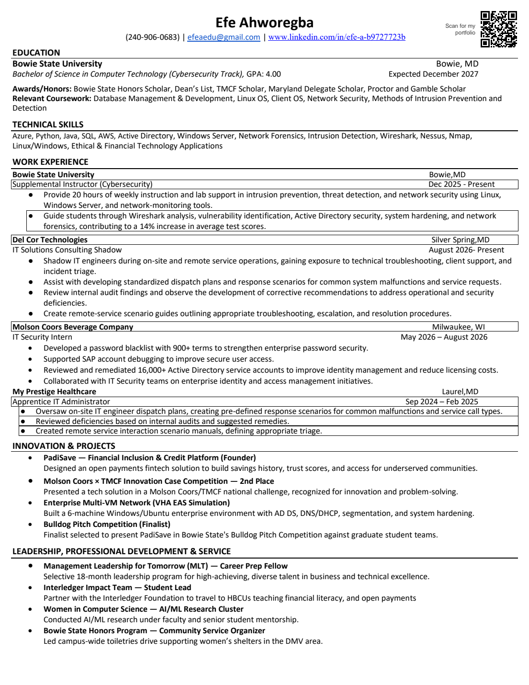

EfeAhworegba
Cybersecurity student who teaches network defense, secures enterprise identities, and builds financial access for underserved communities.
About
I'm a Computer Technology student on the Cybersecurity track at Bowie State University, with a 4.00 GPA and an expected graduation in December 2027.
I spend my time on three things. I teach network security and lab skills as a Supplemental Instructor. I work on enterprise identity and IT operations, from a summer as an IT Security Intern at Molson Coors to my current role shadowing IT engineers at Del Cor Technologies. And I build financial tools for underserved communities, including PadiSave, a fintech platform I founded, and financial literacy outreach with the Interledger Foundation.
Experience
-
Dec 2025 – Present
Supplemental Instructor, Cybersecurity
Bowie State University, Bowie, MD
- Provide 20 hours of weekly instruction and lab support in intrusion prevention, threat detection, and network security using Linux, Windows Server, and network-monitoring tools.
- Guide students through Wireshark analysis, vulnerability identification, Active Directory security, system hardening, and network forensics, contributing to a 14% increase in average test scores.
-
Aug 2026 – Present
IT Solutions Consulting Shadow
Del Cor Technologies, Silver Spring, MD
- Shadow IT engineers during on-site and remote service operations, gaining exposure to technical troubleshooting, client support, and incident triage.
- Assist with developing standardized dispatch plans and response scenarios for common system malfunctions and service requests.
- Review internal audit findings and observe the development of corrective recommendations for operational and security deficiencies.
- Create remote-service scenario guides outlining troubleshooting, escalation, and resolution procedures.
-
May 2026 – Aug 2026
IT Security Intern
Molson Coors Beverage Company, Milwaukee, WI
- Developed a password blacklist with 900+ terms to strengthen enterprise password security.
- Supported SAP account debugging to improve secure user access.
- Reviewed and remediated 16,000+ Active Directory service accounts to improve identity management and reduce licensing costs.
- Collaborated with IT Security teams on enterprise identity and access management initiatives.
-
Sep 2024 – Feb 2025
Apprentice IT Administrator
My Prestige Healthcare, Laurel, MD
- Oversaw on-site IT engineer dispatch plans, creating pre-defined response scenarios for common malfunctions and service call types.
- Reviewed deficiencies found in internal audits and suggested remedies.
- Created remote-service interaction manuals that define appropriate triage.
Education
Bowie State University, Bowie, MD
B.S. in Computer Technology, Cybersecurity Track. GPA 4.00. Expected December 2027.
- Honors
- Bowie State Honors Scholar, Dean's List, TMCF Scholar, Maryland Delegate Scholar, Procter & Gamble Scholar
- Coursework
- Database Management & Development, Linux OS, Client OS, Network Security, Methods of Intrusion Prevention and Detection
Skills
- Security
- Network forensics, intrusion detection, Wireshark, Nessus, Nmap
- Systems and cloud
- Active Directory, Windows Server, Linux, Windows, Azure, AWS
- Programming and data
- Python, Java, SQL
- Focus areas
- Ethical and financial technology applications
- Communication
- Technical instruction, presenting to leadership, pitching, writing procedure guides
Leadership and service
- Management Leadership for Tomorrow (MLT), Career Prep Fellow. Selective 18-month leadership program for high-achieving, diverse talent in business and technical excellence.
- Interledger Impact Team, Student Lead. Partner with the Interledger Foundation to travel to HBCUs teaching financial literacy and open payments.
- Women in Computer Science, AI/ML Research Cluster. Conducted AI/ML research under faculty and senior student mentorship.
- Bowie State Honors Program, Community Service Organizer. Led a campus-wide toiletries drive supporting women's shelters in the DMV area.
- Executive Leadership Council (ELC) Scholar. Selected for demonstrated leadership, academic excellence, and career potential in business and technology.
- Breakthrough Tech, AI Fellow.
Presentations and conferences
- Interledger Foundation, Mexico City, Mexico. Invited to present Bowie State research and Interledger initiatives to global technology leadership, and engaged with the CTO on ethical payments innovation.
- Thurgood Marshall College Fund Leadership Institute, Invited Scholar. Selected to represent Bowie State University at TMCF's national leadership and innovation convening.
- Management Leadership for Tomorrow Tech Trek, California. Invited participant in MLT's technology immersion experience connecting students with industry leaders and emerging tech spaces.
Projects
-
PadiSave
Founder
A financial inclusion and credit platform. I designed an open payments fintech solution that builds savings history, trust scores, and access for underserved communities.
View on GitHub -
Enterprise Multi-VM Network
VHA EAS simulation
A 6-machine Windows and Ubuntu enterprise environment with AD DS, DNS/DHCP, network segmentation, and system hardening.
View on GitHub -
Molson Coors × TMCF Innovation Case Competition
2nd place
Presented a tech solution in a national Molson Coors and Thurgood Marshall College Fund challenge, recognized for innovation and problem-solving.
-
Bulldog Pitch Competition
Finalist
Selected to present PadiSave in Bowie State's Bulldog Pitch Competition against graduate student teams.
Resume

Two pages, PDF. It covers education, technical skills, work experience, projects, leadership, and conferences.
Contact
Have a role, project, or question in mind? Send a message and I'll reply by email.
- efeaedu@gmail.com
- linkedin.com/in/efe-a-b9727723b
- GitHub
- github.com